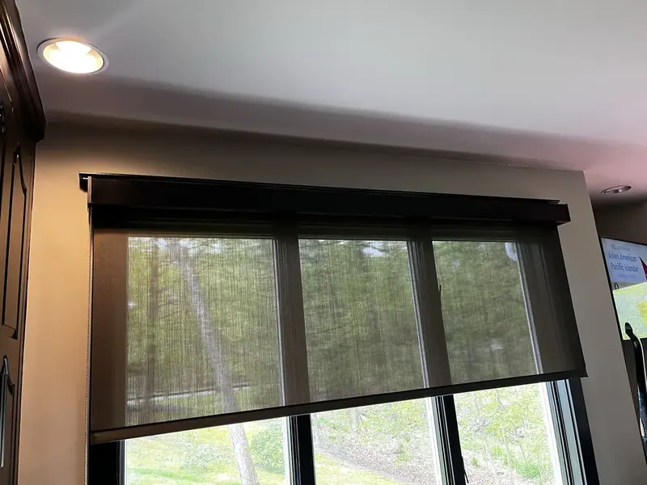
Roller shades
The most tailored look you can put on a window. Light-filtering to full blackout, in fabrics from linen weaves to solar screen that cuts glare and keeps the view.
Roller and solar shades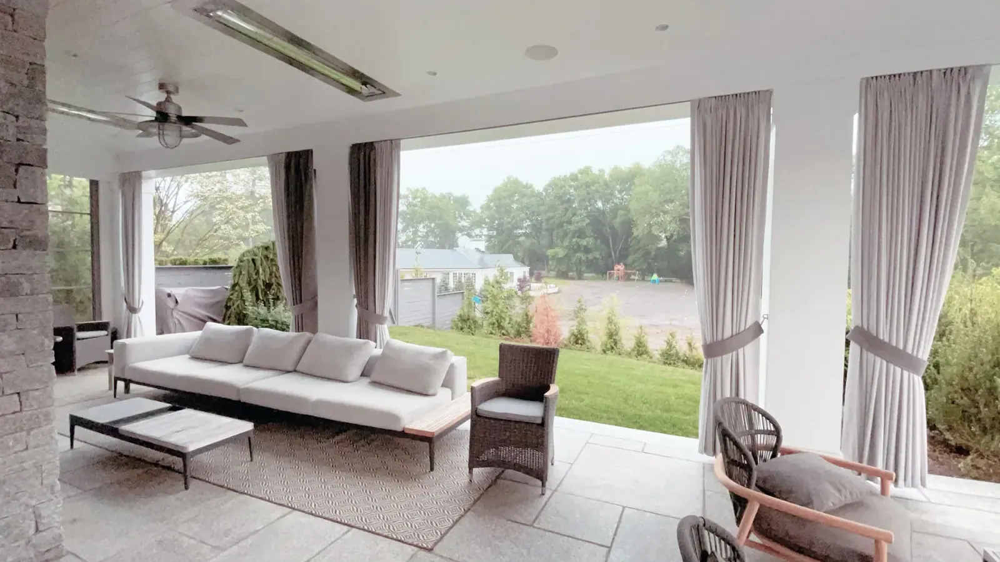
We'll call to find a time that suits you. Samples come to you.
Rather talk now? Call (203) 225-9066
Authorized dealer for
Meet Janis & Isaac
From luxurious custom draperies to blinds, shades and shutters, we combine exceptional craftsmanship, quality products and personalized service to bring beauty and functionality to every space.
We're not a call center or a franchise territory. When you book a consultation, one of us comes to your home, walks every room with you, and stays with the job through installation. That's how we've worked for over 25 years.

Clean lines, a precise fit, and a quicker turnaround than most custom work. These are the three we recommend most.

The most tailored look you can put on a window. Light-filtering to full blackout, in fabrics from linen weaves to solar screen that cuts glare and keeps the view.
Roller and solar shades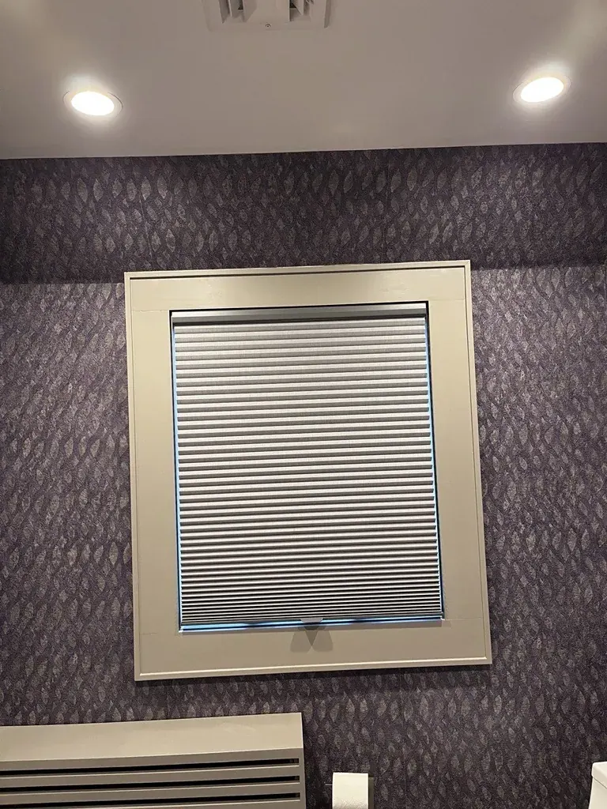
Insulating cells that make a real difference in drafty older homes and sun-facing rooms. Top-down, bottom-up options for privacy with light.
Duette shades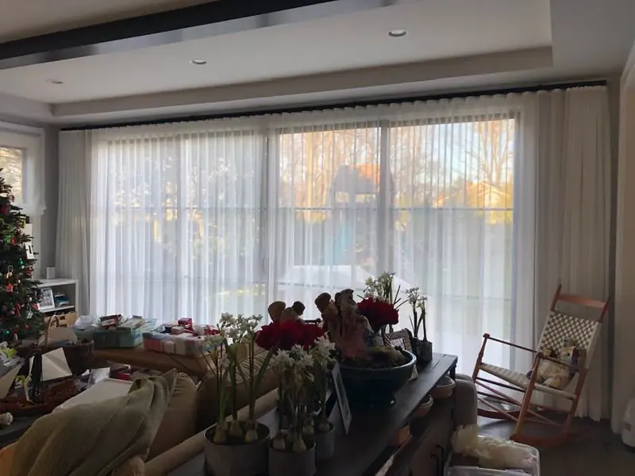
Soft fabric vanes between sheer layers. Tilt them to turn harsh sun into an even glow without losing the view outside.
Sheers and shadingsAlso available: Roman, woven wood, wood and vertical styles. See every product

A shutter is built for one window and no other, so the measure is everything. We fit shutters to arched tops, bay windows, French doors, and the out-of-square openings that older Connecticut homes are full of.
We can source almost any drapery fabric and rod system on the market, from simple linen panels on a slim iron rod to lined, pleated drapery on decorative hardware. Then we measure, hang and dress it so it falls the way it should.
Pair drapery with a shade underneath for privacy and light control, and the room is finished.
See our custom drapery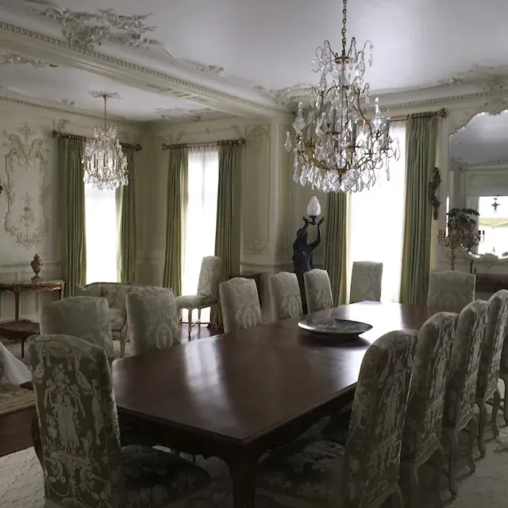
Our workroom also makes bedding and reupholsters the furniture you love.
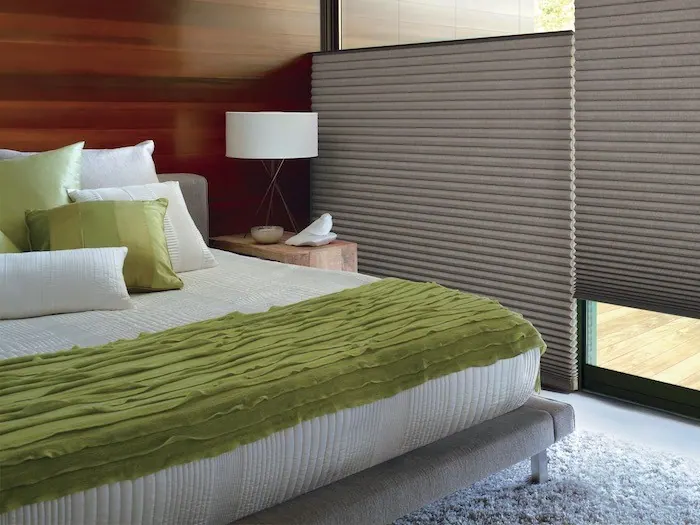
Comforters, duvet covers, shams, bed skirts and pillows designed with you.
Explore Custom beddingRe-craft a favorite piece with new padding, springs, webbing and covers.
Explore UpholsteryPowerView® Automation, set up and working before we leave.
Explore Motorized shades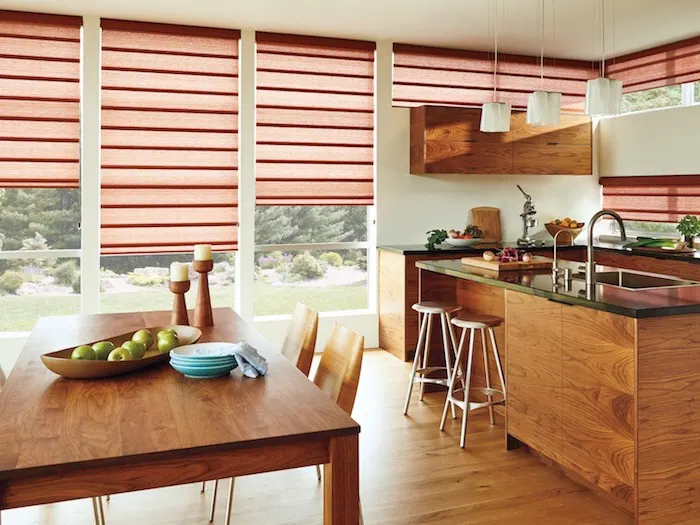
Our own trained installers ensure a perfect fit.
Explore Measuring & installationEvery photo here is a job we measured and installed ourselves.
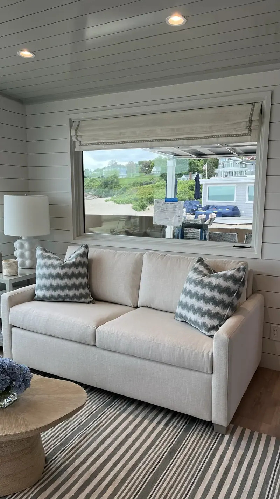
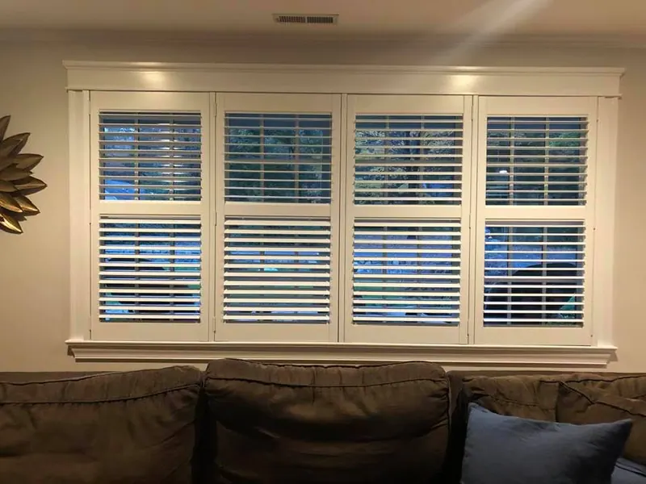
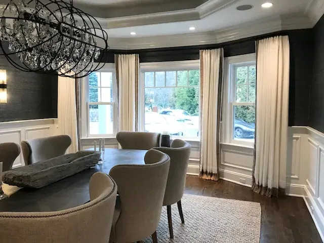

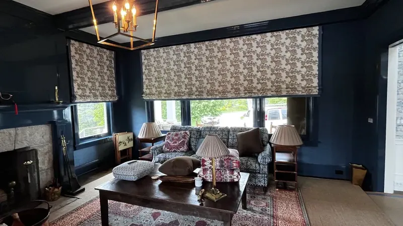

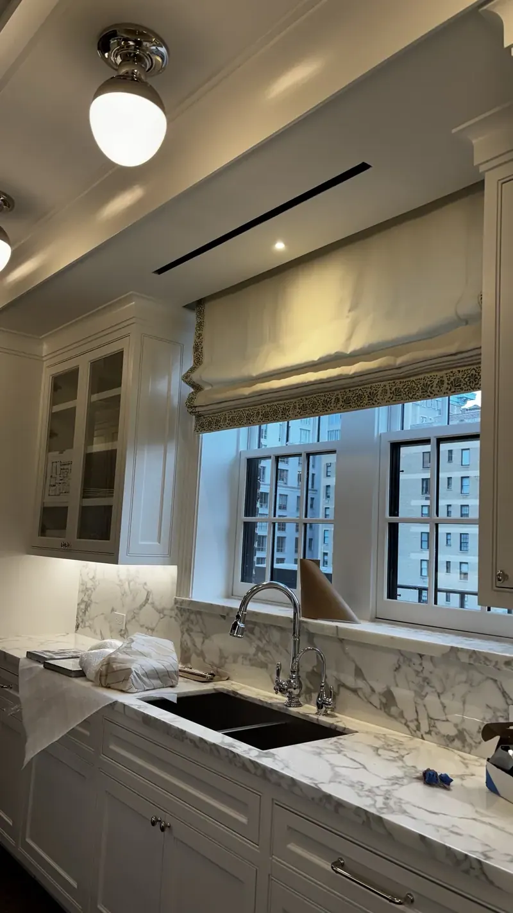
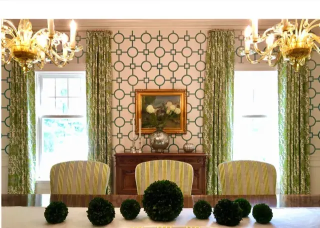

Custom work costs more than a box from a big-box store or a website. Here is exactly where that difference goes.
| What's included | Custom Windows | Off the shelf or online |
|---|---|---|
| Samples shown in your own light | Yes, we bring them | Swatches by mail, or none |
| Every window measured by a professional | Yes, by us | You measure |
| Who is responsible if it doesn't fit | We are | You are |
| Installation | Our own installers | You, or whoever you hire |
| Motorization set up and working | Yes, before we leave | Up to you |
| Someone to call a year later | The same local team | A support line |
We visit at a time that suits you, with samples, and talk through light, privacy and style room by room.
We measure every window and give you a clear written quote.
We order everything and track it, so you don't have to.
Our installers fit, adjust and clean up, and show you how everything works.
Had a great experience with Custom Windows & Upholstery. They were extremely knowledgeable and helpful throughout the whole process. The measuring was spot on, the installation was clean and professional, and the shades came out great, as you can see in the photo. Everything fits perfectly and looks exactly how we wanted. Highly recommend them for anyone looking for quality window treatments and knowledgeable, professional service.
I have used this company 3 times… The workers are very polite & well trained for their roles. They called before they came to confirm the time they will be at my house. The owner Janis is very helpful and an "angel". The prices are very reasonable.
Had such a great experience with Custom Windows! Everyone was so helpful and welcoming. Isaac was especially sweet and helpful and made the experience even better. Highly recommend!

Shades that open at sunrise, close in the afternoon heat, and work with Alexa, Siri or the Google Assistant. Ask us about current Hunter Douglas promotions.
See current promotionsSpecial financing with the Wells Fargo credit card. Issued with approved credit by Wells Fargo Bank, N.A. Equal Housing Lender.
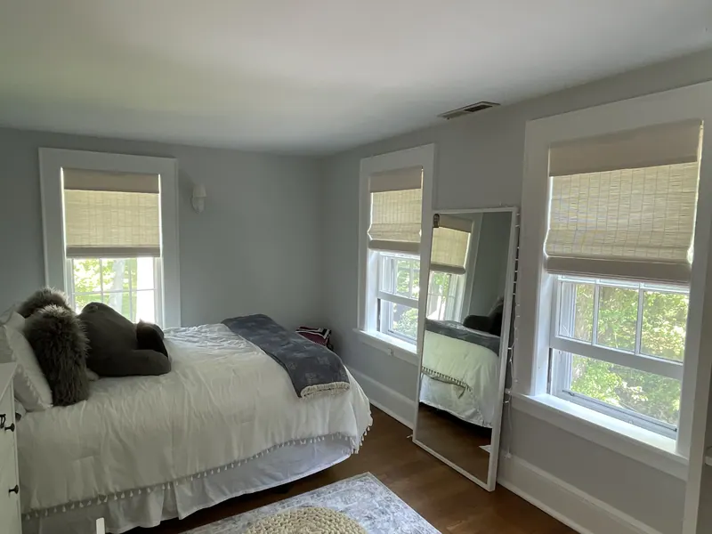
Every room asks something different of a window: darkness for sleep, glare control for screens, moisture resistance for baths. Start with the room.
Explore Blinds and shades by room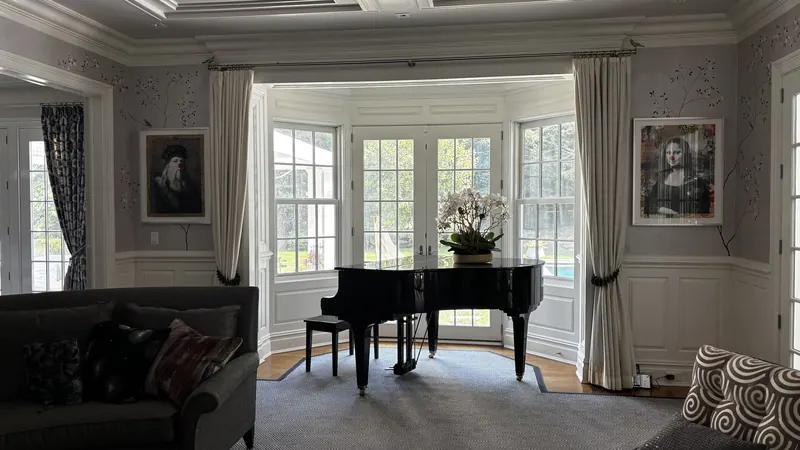
Light, privacy, energy savings, safety, automation. Choose the job you need the window to do and we will show you what does it best.
Explore Blinds and shades by function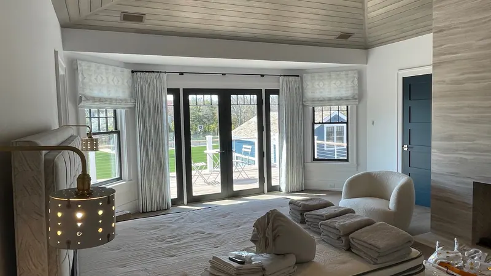
Arches, bays, skylights and sliding doors are where custom work earns its keep. Here is what fits each shape.
Explore Blinds and shades by window shapeBased in Shelton, we cover lower Fairfield County and the New Haven County shoreline.
Yes. One of us comes to your home with samples, walks every room with you, and gives you a clear written quote after measuring every window.
We are based at 100 Beard Sawmill Rd, Suite 225 in Shelton, CT, and have served Fairfield County, the New Haven County shoreline, the New York metro area and beyond for over 25 years.
We are an authorized dealer for Hunter Douglas, Alta Window Fashions and Horizons, and we make custom drapery, bedding and upholstery.
Yes. Our own installers measure, fit, adjust and clean up, and show you how everything works before they leave.

A free visit, real samples, and an honest recommendation. No pressure to buy on the spot.